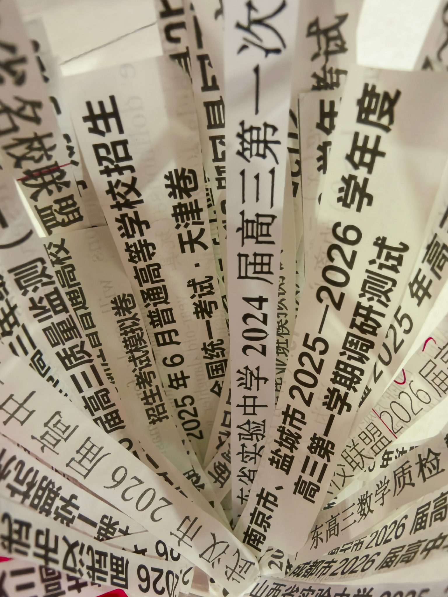
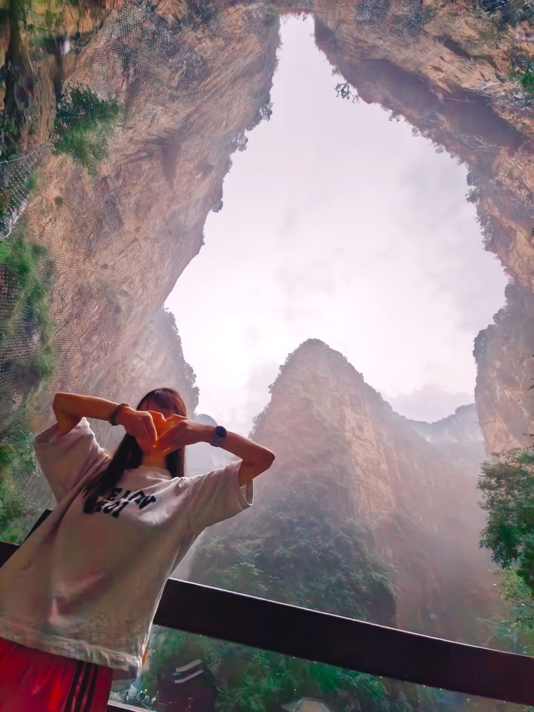
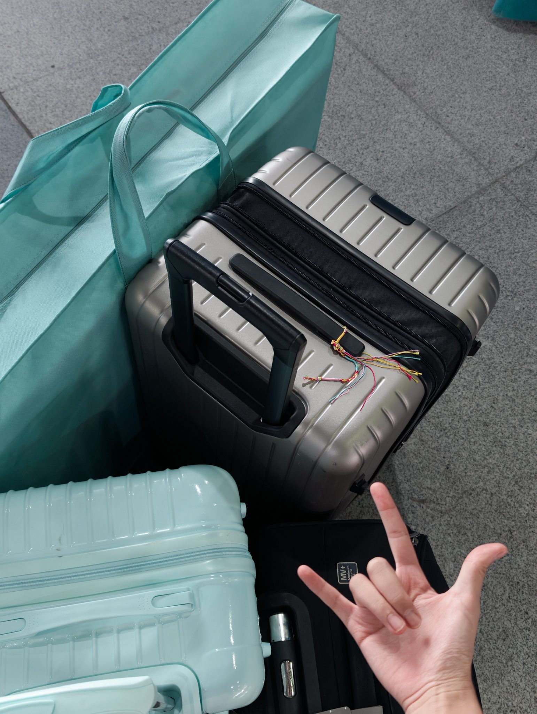
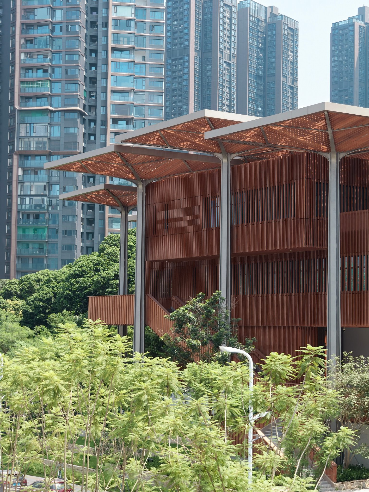
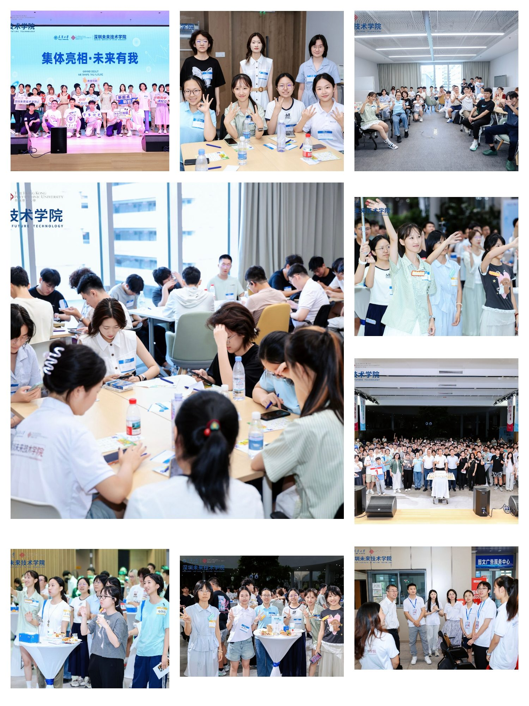
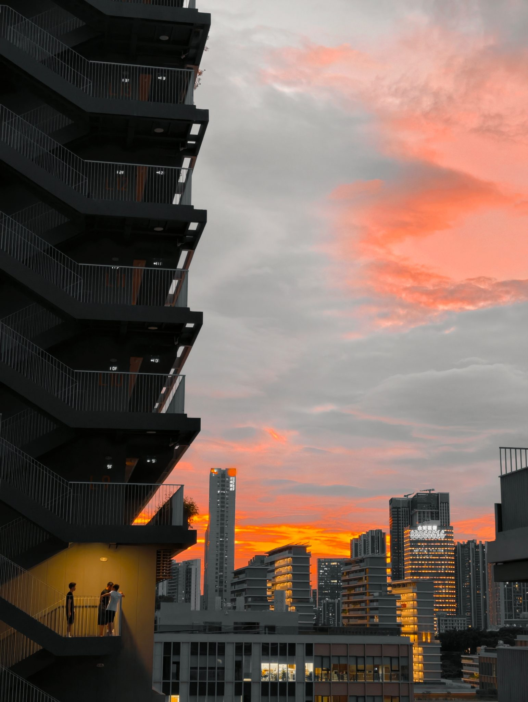
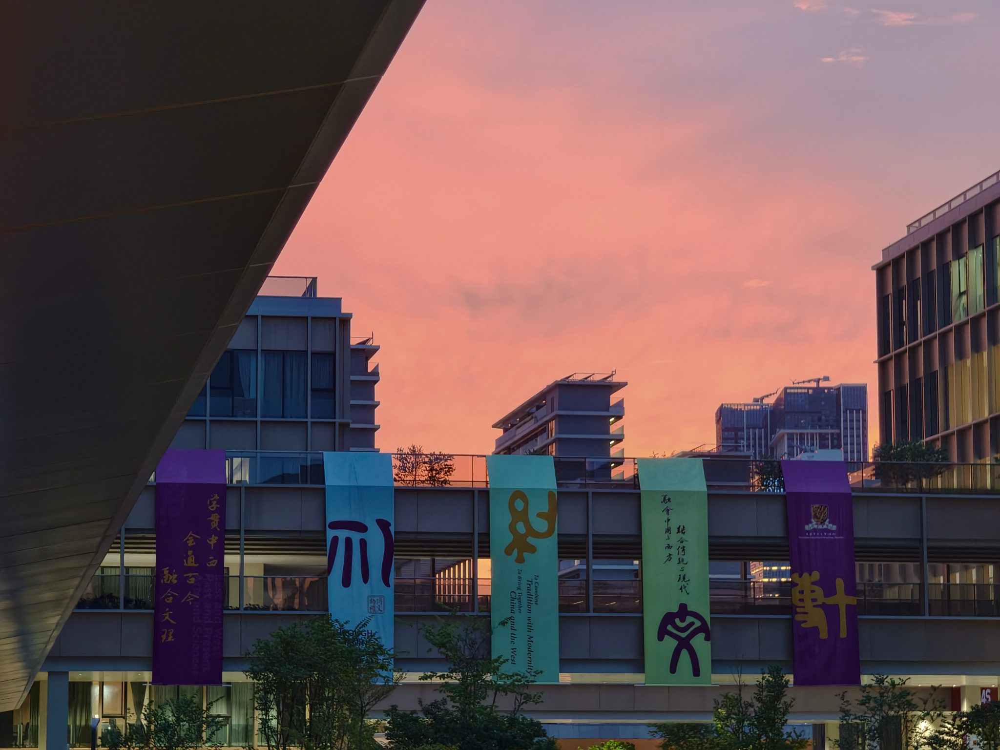
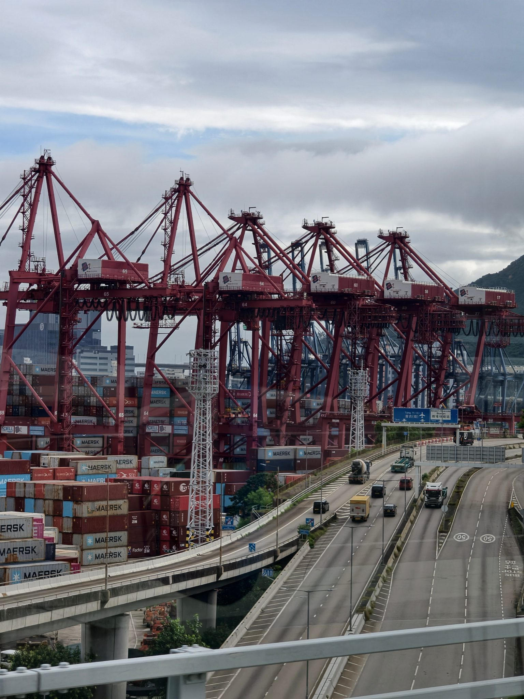
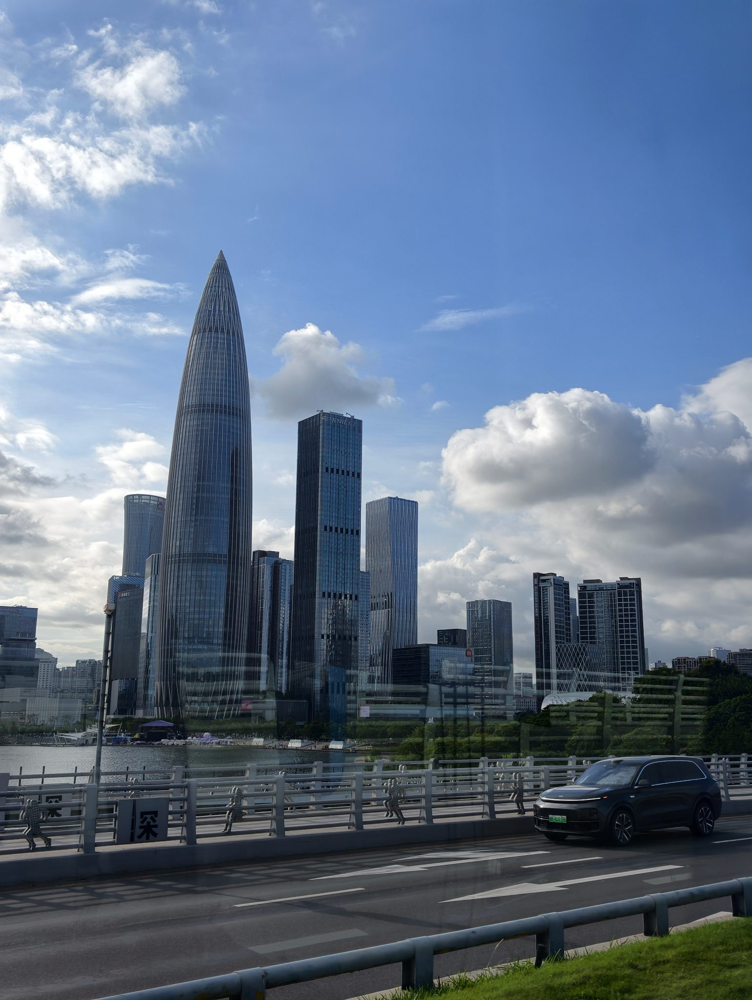
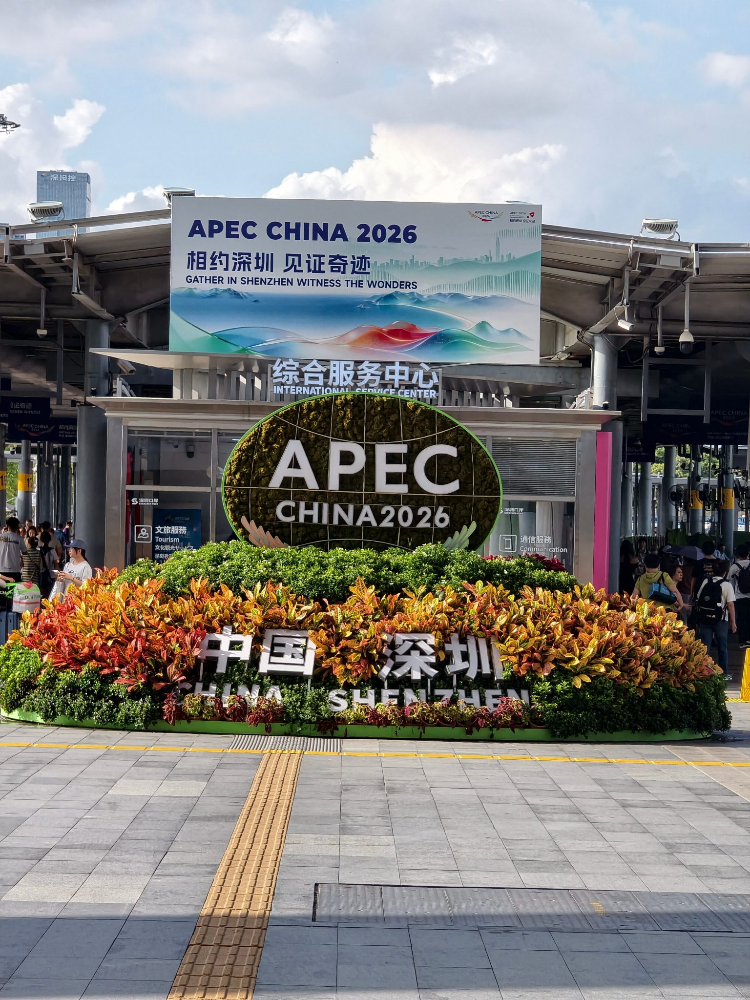

01 / SENIOR YEAR
我把做过的试卷标题剪下来，留下高三走过的刻度。
纸条上的各地名称并不是旅行路线，而是一张张真正做过的卷子。把标题剪下保存，是想记住那段被题目、考试与期待填满的日子；后来走出山西，也像是从这些密密麻麻的练习里，一步步走向新的生活。
离开家乡不是忘记来处，而是在更远的地方看清自己从哪里来、想成为怎样的人。大学和深圳一起，把“独立”从一个词变成了我每天都在经历的事情。
沿着路线向下读：每一张照片都对应一个真实阶段，而不是被单独放进相册。

纸条上的各地名称并不是旅行路线，而是一张张真正做过的卷子。把标题剪下保存，是想记住那段被题目、考试与期待填满的日子；后来走出山西，也像是从这些密密麻麻的练习里，一步步走向新的生活。

山川、古建、面食和熟悉的小城共同组成了家乡。走得越远，我越愿意认真介绍它，也越明白这片土地留给我的倔强与底色。

离家不是一句抽象的勇敢，而是把熟悉的生活折进行李箱，在一次真正的出发里学习独立。

玻璃幕墙、开阔连廊和陌生的学习空间，让“来到远方”成为可以触摸的日常。城市还很陌生，但我已经有了第一个落脚点。

迎新、合影、一起吃饭和并肩走路，这些普通时刻把同学从陌生面孔变成伙伴，也让学校逐渐成为生活。


从晚霞下的教学楼，到绿荫里的校园建筑，新的路线慢慢不再需要导航。大学生活也从“刚刚抵达”，变成了能够安心学习与生活的地方。



海湾港口、向上生长的天际线与开放的城市窗口，让深圳的速度和连接感变得具体。“来了就是深圳人”于我而言，不是忘记山西，而是带着山西给我的底色，在这里学习成为自己。
高考之后，我仍然坚持离开省内。那时候想得很直接：想去更远的地方，看看黄土、煤灰和熟悉的小城之外，还有怎样的生活。
真正离开以后，我却会在异乡的深夜想念一碗刀削面，也开始认真向别人介绍山西的面食、陈醋、古建和黄土。距离让那些曾经习以为常的东西重新有了重量。原来走得越远，有时越能看清自己的来处。
我曾向往上海的梧桐、外滩和电影感，向往那种已经被无数故事书写过的繁华与浪漫。后来，我来到一个原本几乎不了解的城市——深圳。
深圳很热、很快、很吵、很亮，像一个不睡觉的人。起初它和我想象中的浪漫没有太多关系；可待得越久，我越发现自己和它有一些相似：讲效率、不绕弯、不回头。山西人的倔，和深圳人的拼，在这里产生了一种意外的共鸣。
“时间就是金钱，效率就是生命。”
上海的浪漫像是已经写好的，走进那里就能读到许多成熟的句子。深圳的浪漫却是空的，需要自己填写。它只给人一个位置，然后看这个人准备怎样成长。
我很喜欢这句话。它不像一道需要证明资格的门槛，更像有人递来一双筷子，说：“坐下吃吧，别客气。”它不追问一个人的过去，而是直接邀请每个来到这里的人，共同参与城市还没有写完的未来。
“来了就是深圳人。”
像递来一双筷子：坐下吃吧，别客气。
大学阶段，我最明显的变化是更加独立。在天津大学与香港理工大学共同构成的跨校环境中，深圳未来技术学院强调项目制学习与企业实践。学习不再只是等待标准答案，而是与伙伴合作、面对真实问题，再想办法把事情向前推进。
我没有出生在深圳，但我正在这里学习怎样成为自己。也许所谓认同，并不是把来处抹掉，而是坦然地说：我从某个非深圳的地方来，并决定在这里，把自己活成深圳的样子。
刚来到深圳时，周围的一切都需要重新熟悉：新的校园、新的节奏、新的路线，还有一张张尚未记住的面孔。可是在和同学一起上课、吃饭、聊天的日子里，陌生感并不是突然消失的，而是在许多个普通瞬间里一点点变淡。
可能只是下课后一起讨论去哪里吃饭，可能是路上随口讲起今天发生的小事，也可能是什么重要事情都没有，只是有人并肩走过一段路。这些看起来不值得专门记录的日常，却让我慢慢产生一种很真实的感觉：我不是一个人被放进一座陌生城市，我正在和一群新的伙伴共同生活。
“归属感并不总是来自一个宏大的答案，它也可能只是有人问我：今天一起吃饭吗？”
是这些普通的陪伴，让学校不再只是上课的地方，也让深圳不再只是地图上离家很远的坐标。我依然会想念山西，但与此同时，我也开始期待回到校园、见到熟悉的人。原来一个新的地方成为生活，正是从这些微小的期待开始的。